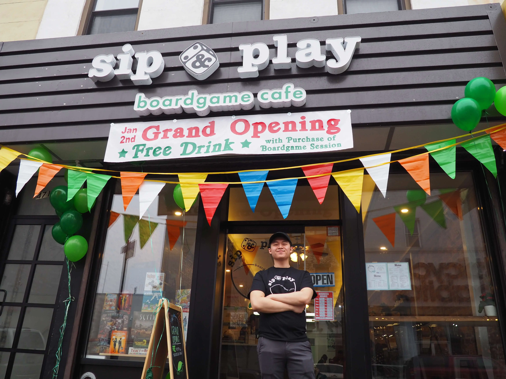

Our Story

Legendary Creature - Human Cafe Owner
Founder, Jonathan Li, shares a passion for board games, boba, and delicious food, so he combined them all to become Sip & Play, Park Slope’s first board game cafe.
It is a straightforward concept, come in with your friends and family to play any board game from our library of 300+ games!
We hope when you visit, you also enjoy our coffee, espresso, boba, sandwiches, and snacks!